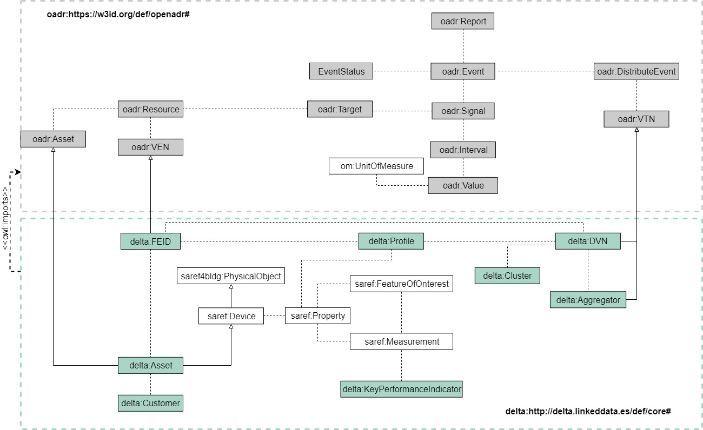

Here you can find the list of ontologies developed for BIMERR project
If you want to contribute developing ontologies please follow the guidelines we provide
| Ontology | Description | Repository | Issue tracker | Requirements | Releases |
|---|---|---|---|---|---|
| Occupants Behavior Ontology | This ontology aims to model occupants behavior inside buildings for the BIMERR project | occupants behavior ontology | occupants behavior issues | occupancy behavior requirements | ontology releases |
